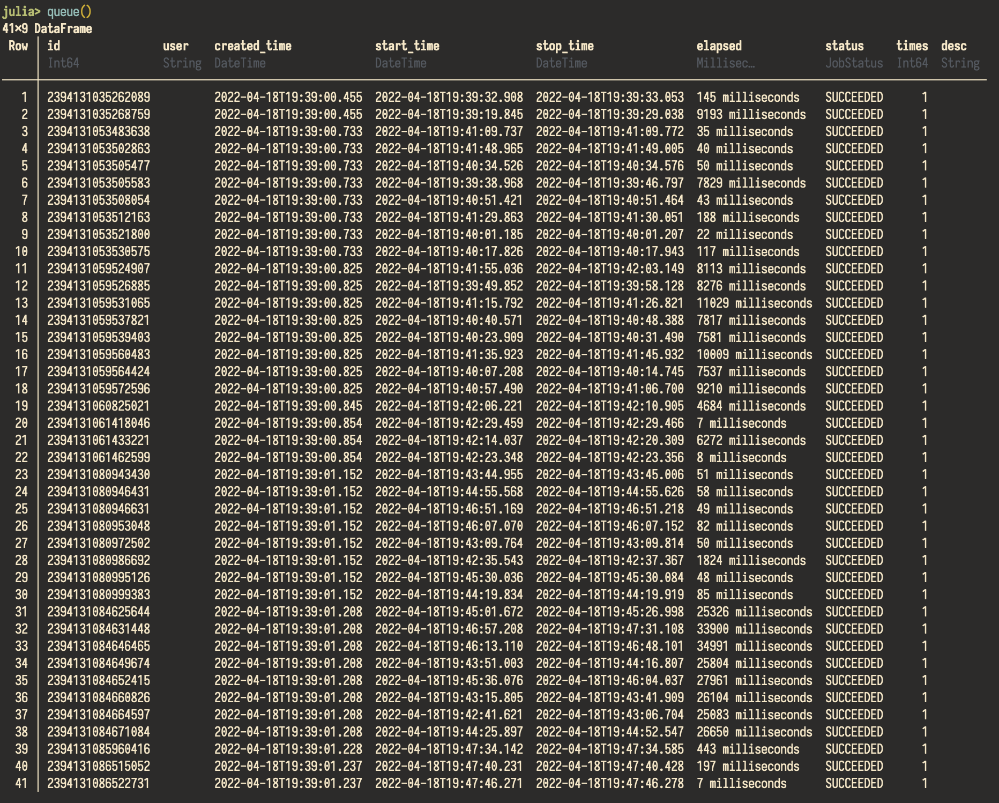

Tracking and monitoring jobs in a workflow
Tracking job status, input parameters, and output results manually are time-consuming and error-prone. In Express.jl, each job's unique ID, start time, stop time, status (whether it succeeded, failed, is running or pending), in the workflow are stored in a database for future reference or sharing information with colleagues.
This database is a DataFrame object implemented by DataFrames.jl. It supports all operations that a DataFrame permits, including listing, sorting, filtering, and modifying. Users can interact with it directly in Julia (Please see its documentation for more information.).
The database can also be stored in a file for future reference or sharing information with colleagues.
julia> using SimpleWorkflows, Serialization
julia> queue()
julia> serialize("table.jls", queue())